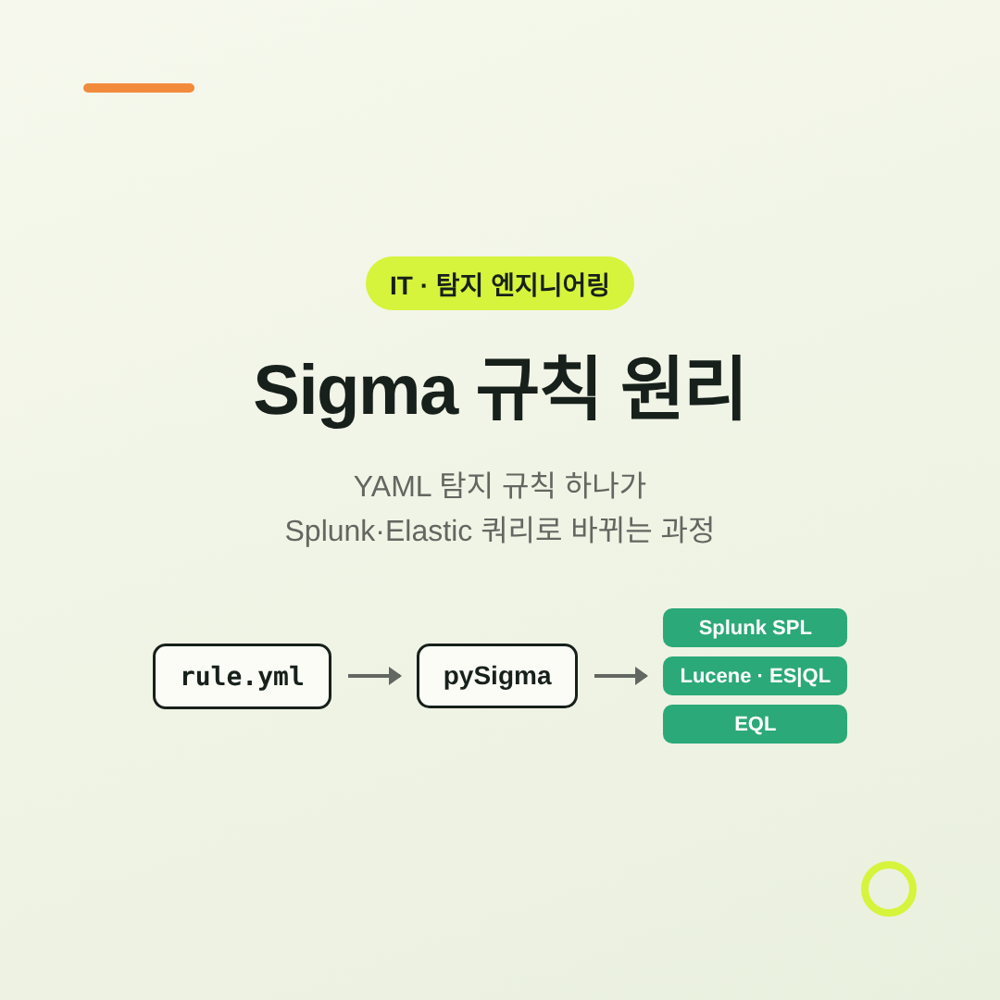
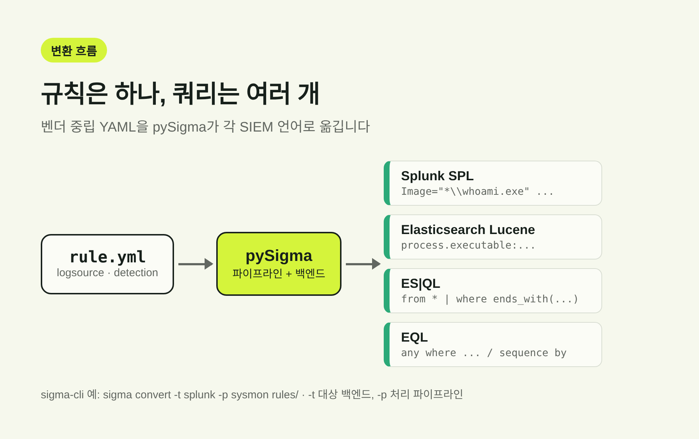
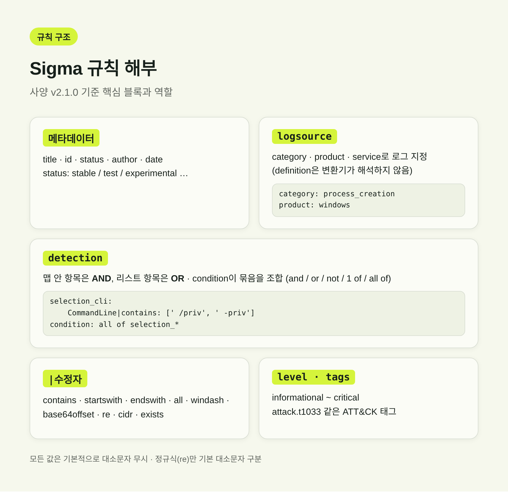
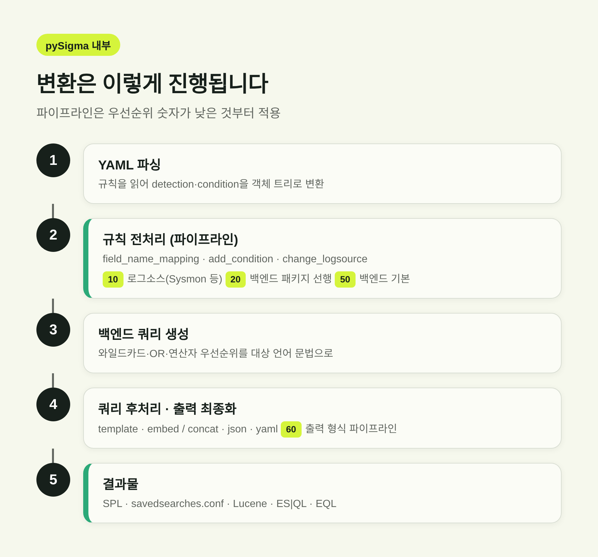
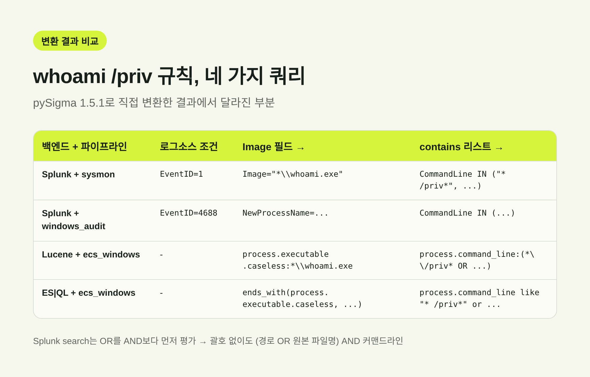
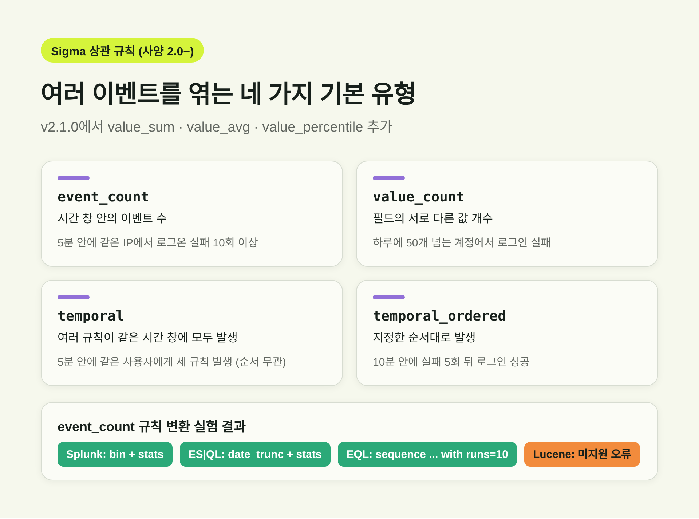
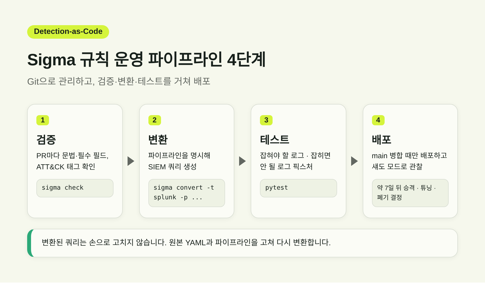

Sigma 규칙 원리 — YAML 탐지 규칙이 SIEM 쿼리로 바뀌는 과정

이번 글에서는 Sigma 탐지 규칙이 어떤 원리로 움직이는지 정리해 보겠습니다. YAML로 쓴 규칙 하나가 어떻게 Splunk SPL과 Elasticsearch 쿼리로 바뀌는지, 그 과정에서 무엇이 빠지고 어긋나는지까지 살펴봅니다.
먼저 요점부터 말씀드립니다.
- Sigma는 로그 탐지 로직을 벤더 중립 YAML로 적는 형식입니다.
- 변환은 백엔드(쿼리 문법 담당)와 처리 파이프라인(필드 이름 담당) 두 부품이 나눠 맡습니다.
- 문법이 맞는 쿼리가 나와도, 실제 로그에 그 필드가 없으면 아무것도 잡지 못합니다.
■ Sigma는 로그를 위한 YARA입니다
SigmaHQ 공식 저장소는 Sigma를 이렇게 소개합니다. "Sigma는 로그 파일에 대해, Snort가 네트워크 트래픽에, YARA가 파일에 하는 역할을 한다."
위협 인텔리전스 분석가 Florian Roth와 Thomas Patzke가 만들었습니다. 공식 저장소에는 3,000개가 넘는 탐지 규칙이 모여 있고, 라이선스는 Detection Rule License(DRL) 1.1입니다.
규칙은 용도에 따라 다섯 갈래로 나뉩니다. 일반 탐지, 위협 헌팅, 신규 위협(APT 캠페인·제로데이), 컴플라이언스, 그리고 변환 시점에 값이 정해지는 플레이스홀더 규칙입니다.
예전에는 SIEM을 바꾸면 탐지 규칙도 처음부터 다시 써야 했습니다. 지금은 규칙을 Sigma로 한 번 쓰고, 배포할 때 각 SIEM의 언어로 옮깁니다. 웹 개발로 치면 TypeScript 소스 하나를 여러 런타임용으로 트랜스파일하는 것과 비슷한 구조입니다.

■ 규칙의 뼈대 — logsource와 detection
Sigma 규칙의 최신 사양은 v2.1.0(2025-08-02)입니다. title, id, status, description, author, tags, level 같은 메타데이터가 있고, 핵심은 두 블록입니다.
logsource — 어떤 로그를 볼 것인가
category, product, service 세 필드로 로그 종류를 지정합니다.
예를 들어 category: process_creation, product: windows는 "윈도우 프로세스 생성 로그"라는 뜻입니다.
변환기는 이 세 값을 보고 어떤 인덱스·이벤트 ID를 붙일지 결정합니다.
반면 definition 필드는 사람을 위한 설명이라 변환기가 자동으로 해석하지 않습니다.
detection — 무엇을 찾을 것인가
detection 안에는 이름 붙인 검색 묶음(selection, filter 등)과 condition이 들어갑니다. 규칙은 단순합니다.
- 맵(키-값 묶음) 안의 항목끼리는 AND입니다.
- 리스트 항목끼리는 OR입니다.
- condition은 and, or, not, 괄호,
1 of,all of로 묶음들을 조합합니다. all of selection_*처럼 와일드카드 패턴도 쓸 수 있습니다. 밑줄로 시작하는 식별자는 이 패턴 대상에서 빠집니다.
연산자 우선순위는 or가 가장 약하고, and, not, x of, 괄호 순으로 강해집니다.
한 가지 기억해 둘 점이 있습니다. 모든 값은 기본적으로 대소문자를 구분하지 않습니다. 정규식만 예외로 기본 구분입니다.
값 수정자 — 파이프(|)로 붙이는 연산
필드 이름 뒤에 |contains처럼 수정자를 붙여 비교 방식을 바꿉니다.
contains/startswith/endswith: 값 양쪽·뒤·앞에 와일드카드를 붙입니다.all: 리스트를 OR에서 AND로 바꿉니다. 인자 순서가 뒤바뀌는 커맨드라인에 유용합니다.windash:-param을/param과 각종 대시 변형까지 함께 잡습니다.base64offset: 값을 base64로 바꿔 찾되, 인코딩 위치에 따른 세 가지 경우를 모두 고려합니다.re,cidr,gt·lt,exists,fieldref등도 있습니다.
cased(대소문자 구분)처럼 Splunk·Elasticsearch 백엔드가 무시하는 수정자도 있습니다.
사양에 있다고 모든 SIEM에서 똑같이 동작하는 것은 아닌 셈입니다.

■ 실제 규칙 하나를 뜯어보겠습니다
SigmaHQ 저장소의 proc_creation_win_whoami_priv_discovery.yml입니다.
제목은 "Security Privileges Enumeration Via Whoami.EXE", level은 high입니다.
whoami.exe를 /priv 옵션으로 실행해 현재 사용자의 권한 목록을 확인하는 행위를 잡습니다.
권한 상승을 시도한 직후 자주 보이는 동작입니다.
tags:
- attack.privilege-escalation
- attack.discovery
- attack.t1033
logsource:
category: process_creation
product: windows
detection:
selection_img:
- Image|endswith: '\whoami.exe'
- OriginalFileName: 'whoami.exe'
selection_cli:
CommandLine|contains:
- ' /priv'
- ' -priv'
condition: all of selection_*
falsepositives:
- Unknown
level: high
한 줄씩 읽으면 이렇습니다.
selection_img는 리스트입니다. 실행 파일 경로가\whoami.exe로 끝나거나, 원본 파일명이 whoami.exe면 참입니다. 파일 이름을 바꿔 실행하는 우회를 두 번째 조건이 막습니다.selection_cli는 커맨드라인에/priv또는-priv가 들어 있으면 참입니다.condition: all of selection_*는 두 묶음을 AND로 엮습니다.attack.t1033은 MITRE ATT&CK의 System Owner/User Discovery 기법입니다.
같은 계열의 "Whoami Utility Execution" 규칙은 /priv 조건 없이 whoami 실행만 봅니다. 그래서 level이 low이고, 오탐 원인으로 관리자 활동·관리 스크립트·모니터링 도구를 적어 두었습니다. 조건을 좁힐수록 심각도를 높게 매기는 설계가 눈에 띕니다.
■ 변환의 두 부품 — 백엔드와 파이프라인
변환 엔진은 pySigma라는 파이썬 라이브러리입니다. 예전 변환기 sigmac를 대체했고, 명령줄 도구 sigma-cli가 그 위에서 돌아갑니다.
pySigma는 일부러 덩치를 작게 유지합니다. 쿼리 문법을 만드는 백엔드와 필드 이름을 맞추는 처리 파이프라인을 별도 패키지로 떼어 냈습니다. 코어는 벤더 중립으로 남기고, Splunk·Elasticsearch 지식은 플러그인이 갖는 구조입니다.
명령은 이런 모양입니다.
sigma plugin install splunk
sigma convert -t splunk -p sysmon rules/windows/process_creation
sigma convert -t esql -p ecs_windows --output-dir translated/ rules/
-t는 대상 백엔드, -p는 적용할 파이프라인입니다. 파이프라인은 여러 개를 겹칠 수 있습니다.
파이프라인 내부는 세 단계로 움직입니다.
- 규칙 전처리: 필드명 매핑(
field_name_mapping), 조건 추가(add_condition), 로그소스 변경 등 규칙 자체를 고칩니다. - 쿼리 후처리: 만들어진 쿼리를 템플릿에 감싸는 등 손봅니다.
- 출력 최종화: 여러 쿼리를 하나의 파일 형식으로 묶습니다.
여러 파이프라인은 우선순위 숫자가 낮은 것부터 적용됩니다. 로그소스 파이프라인(Sysmon 등)이 10, 백엔드 파이프라인이 50, 출력 형식 파이프라인이 60입니다.

■ 같은 규칙, 네 가지 쿼리
위 whoami 규칙을 pySigma 1.5.1로 직접 변환해 봤습니다. (Splunk 백엔드 2.1.0, Elasticsearch 백엔드 2.1.1)
Splunk + sysmon 파이프라인
EventID=1 Image="*\\whoami.exe" OR OriginalFileName="whoami.exe" CommandLine IN ("* /priv*", "* -priv*")
Splunk + windows_audit 파이프라인
EventID=4688 NewProcessName="*\\whoami.exe" OR OriginalFileName="whoami.exe" CommandLine IN ("* /priv*", "* -priv*")
Elasticsearch Lucene + ecs_windows 파이프라인
(process.executable.caseless:*\\whoami.exe OR process.pe.original_file_name:whoami.exe) AND (process.command_line:(*\ \/priv* OR *\ \-priv*))
ES|QL + ecs_windows 파이프라인
from * metadata _id, _index, _version | where (ends_with(process.executable.caseless, "\\whoami.exe") or process.pe.original_file_name=="whoami.exe") and (process.command_line like "* /priv*" or process.command_line like "* -priv*")
결과를 나란히 놓으면 원리가 보입니다.
endswith는 앞에*,contains는 양쪽에*가 붙었습니다. ES|QL에서는ends_with()함수와like로 바뀌었습니다.- 리스트는 Splunk에서
IN (...), Lucene에서 괄호 묶음 OR이 됐습니다. - 파이프라인에 따라
Image가NewProcessName이나 ECS의process.executable로 바뀌었습니다. - sysmon 파이프라인은
EventID=1을, windows_audit 파이프라인은EventID=4688을 앞에 붙였습니다. logsource가 실제 이벤트 조건으로 번역된 것입니다.
Splunk 쿼리에 괄호가 없는 점도 흥미롭습니다.
Splunk search 명령은 OR를 AND보다 먼저 평가합니다. 공식 문서도 A AND B OR C를 A AND (B OR C)로 처리한다고 설명합니다.
그래서 괄호 없이도 "(경로 OR 원본 파일명) AND 커맨드라인"이 됩니다.
백엔드가 대상 언어의 연산자 우선순위까지 알고 있어야 한다는 뜻입니다.
Splunk 백엔드는 -f savedsearches 옵션으로 savedsearches.conf 형식도 뽑아 줍니다.
규칙 제목이 스탠자 이름이 되고, description과 search 항목이 채워집니다.

■ 한계 1 — 필드 정규화는 아무도 대신해 주지 않습니다
windows_audit 변환 결과를 다시 보시기 바랍니다.
Image는 NewProcessName으로 바뀌었지만 OriginalFileName은 그대로 남았습니다.
문제는 Windows 보안 이벤트 4688에 OriginalFileName 필드가 아예 없다는 점입니다. Microsoft 문서의 4688 필드 목록에는 NewProcessName, ParentProcessName, CommandLine 등은 있어도 이 필드는 없습니다. 게다가 CommandLine은 기본값이 비어 있고, "프로세스 생성 이벤트에 명령줄 포함" 그룹 정책을 켜야 기록됩니다.
쿼리 문법은 완벽합니다. 그런데 정책이 꺼진 환경이라면 이 규칙은 영원히 침묵합니다. CI/CD 사례를 정리한 한 보안 블로그는 이를 이렇게 표현했습니다. "파이프라인 불일치는 문법적으로는 유효하지만 아무것도 매칭하지 않는 쿼리를 만든다."
SOC Prime도 같은 지점을 짚습니다.
같은 process_creation 규칙이 Sysmon에서는 Image, Splunk Windows Security에서는 New_Process_Name을 봐야 합니다.
CIM, ASIM, ECS, OCSF처럼 정규화 모델이 여럿이고, 매핑되지 않은 필드는 "조용히 규칙을 좁히거나 깨뜨린다"고 지적합니다.
변환 도구 중 어느 것도 필드 매핑 검증을 없애 주지는 못한다는 결론입니다.
Hayabusa 프로젝트도 이 문제로 고민 중입니다. OriginalFileName을 쓰는 규칙이 늘면서 윈도우 기본 로그(4688)로는 탐지가 안 되는 규칙이 많아졌고, 해당 조건만 떼어 내는 방안을 검토하고 있습니다.
사양 2.0이 taxonomy 필드를 추가한 것도 이 때문입니다. 조직이 자체 필드명·로그소스 이름을 정의하거나 기본 모델에 매핑할 수 있게 했습니다. 다만 방향을 제시한 것이지, 정규화 작업 자체를 없애 주지는 않습니다.
■ 한계 2 — 상관 규칙은 백엔드마다 사정이 다릅니다
단일 이벤트 매칭만으로는 "5분 안에 로그인 실패 10번" 같은 패턴을 잡을 수 없습니다. 그래서 2024년 8월 사양 2.0에서 상관(correlation) 규칙이 들어왔습니다.
기본 유형은 네 가지입니다.
- event_count: 시간 창 안의 이벤트 수
- value_count: 특정 필드의 서로 다른 값 개수 (예: 하루에 50개 넘는 계정에서 실패)
- temporal: 여러 규칙이 같은 시간 창 안에 모두 발생 (순서 무관)
- temporal_ordered: 지정한 순서대로 발생 (예: 실패 5번 뒤 성공)
v2.1.0에서는 value_sum, value_avg, value_percentile이 추가됐습니다.
aliases로 규칙마다 다른 필드명을 하나로 묶어 group-by에 쓸 수도 있습니다.
직접 시험해 봤습니다. EventID 4625(로그온 실패)를 IpAddress별로 5분 동안 세어 10번 이상이면 알리는 규칙입니다.
correlation:
type: event_count
rules:
- failed_logon
group-by:
- IpAddress
timespan: 5m
condition:
gte: 10
결과는 백엔드마다 완전히 달랐습니다.
- Splunk:
| bin _time span=5m | stats count as event_count by _time IpAddress | search event_count >= 10 - ES|QL:
date_trunc(5minutes, @timestamp)로 시간 버킷을 만든 뒤stats ... | where event_count >= 10 - EQL:
sequence by IpAddress with maxspan=5m [any where EventID:4625] with runs=10 - Lucene: "Backend does not support correlation rules." 오류
Splunk와 ES|QL은 고정 5분 구간으로 자르고, EQL은 최대 5분 간격의 연속 시퀀스로 봅니다. 같은 YAML인데 의미가 미묘하게 다르게 구현되는 셈입니다. 사양도 백엔드가 필수 기능을 지원하지 못하면 오류를, 일부만 지원하면 경고를 내도록 정해 두었습니다. Security Onion 역시 기본은 EQL 변환이고, 상관 규칙을 쓰려면 프리릴리스 단계의 ES|QL 옵션이 필요하다고 안내합니다.

■ 한계 3 — 오탐 튜닝은 결국 환경의 몫입니다
공개 규칙은 모든 조직의 평균을 겨냥합니다. 우리 회사의 정상 GPO 스크립트가 규칙 여러 개를 동시에 울리는 일은 흔합니다.
사양 2.0의 Sigma Filters가 이 문제를 다룹니다.
필터를 규칙과 분리해 두고, rules: 목록에 적은 규칙 ID들에 한꺼번에 덧붙입니다.
예를 들어 User|startswith: 'adm_'로 관리자 계정을 제외하는 식입니다.
원본 규칙을 고치지 않으니 업스트림 업데이트를 받기도 수월합니다.
Graylog는 필터가 필요한 이유를 두 가지로 설명합니다. 규칙 수준 조건이 조직 환경을 반영하지 못할 수 있고, 공격자가 널리 알려진 예외 경로를 악용해 탐지를 피할 수 있다는 점입니다. 예외를 넓게 잡을수록 그 틈이 공격 경로가 된다는 경고이기도 합니다.
Security Onion은 비슷한 기능을 화면에서 제공합니다.
Tuning 탭에서 커스텀 필터를 추가하면 원래 condition 뒤에 and not 1 of sofilter*가 붙습니다.
■ SIEM·SOAR 운영에서는 '탐지를 코드처럼' 다룹니다
Sigma가 진가를 보이는 곳은 운영 파이프라인입니다. 규칙이 YAML 텍스트이니 Git으로 버전을 관리하고, 리뷰하고, 테스트할 수 있습니다.
2026년 6월 공개된 한 Sigma CI/CD 사례는 네 단계를 제시합니다.
- 검증: PR마다
sigma check로 문법·필수 필드를 확인하고, 메타데이터 잡이 ATT&CK 태그까지 검사합니다. - 변환:
sigma convert -t splunk -p splunk_windows처럼 파이프라인을 명시해 쿼리를 만듭니다. - 테스트: 규칙마다 잡혀야 할 로그와 잡히면 안 되는 로그를 픽스처로 두고 pytest로 돌립니다.
- 배포: main에 병합될 때만 배포하고, 신규 규칙은 보통 7일간 섀도 모드로 지켜본 뒤 승격·튜닝·폐기를 정합니다.
변환된 쿼리를 손으로 고치는 것은 금물입니다. 그 글은 이를 "운영 서버에서 프로덕션 코드를 직접 고치는 것과 같은 실패"라고 표현합니다.
CERT-EU는 여러 SIEM과 EDR을 함께 쓰는 환경 때문에 Sigma를 택했습니다. 그리고 pySigma 래퍼 도구 droid를 만들어 검증, 플랫폼별 변환, Atomic Red Team 기반 테스트, Splunk·Microsoft Sentinel 배포까지 CI/CD로 묶었습니다. 그러면서도 "Sigma 구현은 특히 MSSP에게 어려울 수 있다"고 솔직히 적었습니다.
ATT&CK 태그는 운영에서 나침반 역할을 합니다.
attack.t1033 같은 태그를 모으면 어떤 기법을 탐지하고 있고 어디가 비었는지 커버리지를 셀 수 있습니다.
level과 id, tags는 알림에 그대로 실려 나가므로, SOAR 플레이북이 심각도나 기법에 따라 분기하는 기준으로 삼기에도 좋습니다.

정리하면 이렇습니다.
Sigma는 탐지 로직을 특정 SIEM에서 떼어 내는 데 성공했습니다. 백엔드가 문법을, 파이프라인이 필드를 맡는 구조 덕분에 규칙 하나로 여러 플랫폼을 다룰 수 있습니다. 반면 필드 정규화, 상관 규칙 지원, 오탐 튜닝은 여전히 각 조직이 책임져야 할 영역입니다.
SOC Prime의 한 문장이 이 기술의 성격을 잘 요약합니다. "Translation is not preservation" — 번역이 의미까지 보존해 주지는 않는다는 말입니다.
그래도 Sigma를 도입하겠냐고 물으신다면, 그렇다고 답하겠습니다. 다만 변환된 쿼리가 실제 로그에서 무엇을 잡는지 한 번은 꼭 확인하시길 권합니다.
참고자료
- SigmaHQ/sigma 공식 저장소 README
- Sigma Rules Specification v2.1.0
- Sigma Correlation Rules Specification
- Sigma Filters Specification
- Sigma Modifiers 문서 (sigmahq.io)
- pySigma GitHub
- pySigma Processing Pipelines 문서
- sigma-cli GitHub
- pySigma Splunk backend (PyPI)
- Graylog — Sigma Specification 2.0: What You Need to Know
- detection.fyi — Security Privileges Enumeration Via Whoami.EXE
- detection.fyi — Whoami Utility Execution
- Splunk Search Manual — Boolean expressions
- Microsoft Learn — Event 4688
- Hayabusa rules issue #624
- SOC Prime — Detection Rule Portability
- CERT-EU — Sigma Unleashed: A Realistic Implementation
- Andrea Fortuna — Sigma CI/CD pipeline
- Security Onion Docs — Sigma
- CSO Online — Sigma rules explained